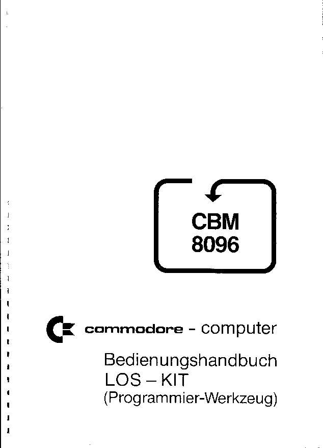

This document has been slightly html-ized by A. Fachat
A postscript version that shows more text formatting is available in LosKit-de.ps.gz
Tue Apr 7 10:50:27 MEST 1998
CBM 8096 Commodore Computer Users Manual LOS-KIT (Development Tools) e-Version 1.0, as of 20 Mar 1998 This is the (german) electronic copy of the 8096 LOS-KIT Users Manual. LOS-KIT is a set of development tools especially for the LOS-96 `operating system'. The document has been scanned and OCR's by A. Fachat in march 1998, after receiving a copy from Olaf Seibert (Thanks for that!). Proofreading by A. Fachat also. The rest of the document is german, so only one remark: The printer that printed this document couldn't print the "^" and the "<". Also it couldn't print the "@" and the "#" and replaces them with "ß" and "¶" resp. In addition to this document the Users Manual for the 8096 LOS-96 is available. The LOS-96 is an improved BASIC for the CBM 8096. Dies ist das deutsche Bedienungshandbuch des Commodore 8096 LOS-KIT (in elektronischer Form). Das Kit ist eine Sammlung von Programmier-Werkzeugen für das LOS-96 Betriebssystem. Das Dokument wurde von im März 1998 von A. Fachat gescannt und OCR't, nachdem eine Kopie von Olaf Seibert zur Verfügung gestellt wurde (Vielen Dank!). Gegengelesen wurde ebenfalls von A. Fachat. Der Drucker, der das Original gedruckt hat konnte kein "^" und kein "<" drucken. Außerdem ersetzte er das "@" durch ein "ß" und das "#" durch ein "¶". Zusätzlich zu diese Dokument gibt es das Bedienungshandbuch zum LOS-96, einer verbesserten BASIC- Version für den CBM 8096. 20. Mar. 1998 A. Fachat
INHALTSÜBERSICHT LOS-KIT 1. ALLGEMEINES 2. AUSGABEMÖGLICHKEITEN 2.1 Steuerung der Ausgabe 2.2 Ausgabe auf Drucker 3022/4022 2.3 Ausgabe auf beliebiges Peripheriegerät 2.4 Hardcopy 3. DELETE 4. NEU-NUMMERIEREN (NUMBER) 4.1 Format 4.2 Fehlermeldungen 4.3 Anmerkungen 4.4 Beispiele für Blocktransport 4.5 Welche Anweisungen werden geändert? 5. FIND 5.1 Format 5.2 Anmerkungen 5.3 Beispiele 6. VARIABLEN-DUMP 6.1 Format 6.2 Anmerkungen 6.3 Beispiele 7. PROGRAMM-TRACE 7.1 Kalt- oder Warmstart? 7.2 Tracebeginn 7.3 Variablenliste 7.4 Indizierte Variable 7.5 Zeihenfolqe der Ausgabe 7.6 Einzeischritt oder fortlaufender Trace 7.7 Tracen von GET 7.8 Ausqabe des Trace auf beliebiges Gerät 8. FLOPPY BEDIENUNG 8.1 Directory auf Bildschirm oder Drucker ausgeben 8.2 Floppy-Kommando senden 8.3 Fehlermeldung lesen 9. MERGE 9.1 Format 9.2 Beispiel 10. LADEN + STARTEN 10.1 Format 10.2 Anmerkungen
1. ALLGEMEINES LOS-Kit ist ein Programm-Entwicklungs-Werkzeug für BASIC- Programmierer unter LOS-96 auf CBM 8096. Das System ist nur zum Entwicklungszeitpunkt erforderlich. Der Anwender von damit entwickelten Programmen benötigt LOS-Kit nicht. Die wichtigsten Dienste von LOS-Kit sind: Neu-Nummerieren (Renumber) Suchen (Find) Ausgabe aller Variablen mit (Dump) Inhalt Ablaufverfolger (Trace) Floppy-Bedienung auf DOS- (DOS-Support) Ebene Mischen von Programmen (Merge) LOS-Kit wird zusätzlich zum LOS-96 in den Betriebssystem- RAM geladen, also in die unteren 32K und belegt dort ca. 3K unmittelbar hinter LOS-96. Dieser Bereich kann dann nicht für andere Systemerweiterungen oder für die Verlängerung des BASIC-Programrn- oder BASIC- Variablenbereiches nach unten verwendet werden. Laden, Starten, Abschalten: Laden: .s (system resident) Starten: Automatisch durch das Laden Abschalten: .x Alle Eingaben werden auf den Bildschirm geschrieben und mit RETURN übergeben. Da der LOS-Kit ein reines Programm-Eingabe- und Test- Werkzeug ist, sind alle LOS-Kit-Anweisungen nur im Direktmodus möglich, können also nicht von BASIC- Programmen aus aufgerufen werden! Der Drucker, mit dem diese Anleitung geschrieben wurde, kann die Zeichen 'Pfeil nach oben' und 'spitze Klammer auf' nicht drucken und ersetzt den 'Klammeraffen' (Ringel-a) durch ein 'ß' und das 'Doppelkreuz' (Nummernzeichen) durch ein '¶' (Paragraphenzeichen). Bei Verwendung der DIN-Tastatur ist der 'Klammeraffe' durch das 'Paragraphen-zeichen' zu ersetzen. Alle BASIC- und LOS-Kit-Befehle werden mit großen Buchstaben wiedergegeben. Bitte beachten Sie, daß auf diese Befehle auf dem Bildschirm mit kleinen Buchstaben dargestellt werden! Alle LOS-Kit-Befehls-Buchstaben (z.B. 'n' oder 'v') sind ohne SHIFT einzugeben!
2. AUSGABEMÖGLICHKEITEN LOS-Kit bietet die Möglichkeit, die Listen von einigen LOS-Kit-Befehlen, sowie beliebige Bildschirminhalte auf Drucker oder Floppy auszugeben. Diese Möglichkeiten und die Steuerung der Ausgaben grundsätzlich werden im folgenden beschrieben. 2.1 Steuerung der Ausgabe Die Befehle FIND, DUMP, TRACE und DIRECTORY geben Listen aus, die länger als ein Bildschirm sein können. Um nicht ungewollt Information durch Hochrollen des Bildschirms zu verlieren, geben diese Befehle die Listen jeweils nur aus, solange die RETURN-Taste gedrückt ist. Läßt man los, stoppt die Ausgabe, drückt man wieder, läuft sie weiter. Um bei langen Listen, die z.B. auf Drucker oder Floppy ausgegeben werden sollen, nicht dauernd die RETURN-Taste drücken zu müssen, wird auch weitergelistet, wenn die SHIFT-Taste gedrückt wird. Durch Drücken von SHIFT-LOCK können Sie also auf Dauerausgabe schalten. Dazu drücken Sie zuerst die RETURN-Taste, um die Funktion auszulösen und drücken dann SHIFT-LOCK, solange die RETURN-Taste noch gedrückt ist. Dann können Sie die RETURN-Taste loslassen. Vergessen Sie aber nicht, nach Beendigung der Funktion die SHIFT-LOCK-Taste wieder zu lösen! Am Ende von solchen Listen-Funktionen kommt der Cursor erst dann wieder auf den Bildschirm, wenn Sie die RETURN- Taste losgelassen haben, bzw. die SHIFT-LOCK-Taste entriegelt haben! Die Befehle FIND, DUMP und DIRECTORY können durch Drücken der STOP-Taste abgebrochen werden, TRACE fällt nach Loslassen von RETURN automatisch in den Eingabemodus zurück.
2.2 Ausgabe auf Drucker 3022 / 4022 . 'spitze Klammer auf' setzt das Ausgabeflag für die Standarddrucker 3022/4022. Alle SM-KIT Befehle, die Listen erzeugen, geben dann zusätzlich zur Bildschirmausgabe auch auf Drucker aus. Da diese Ausgabe speziell auf den 3022/4022 zugeschnitten ist, wird vor jeder Zeile der Code 17 gesendet, um den Drucker auf Kleinschreibung zu schalten, sofern der Rechner ebenfalls auf Kleinschreibung gestellt ist. Da dieser Steuercode bei anderen Druckern entweder den Druck eines Zeichens bewirken kann, oder den Drucker zu sonstigen unerwünschten Reaktionen bewegen kann, sollten Sie für andere Drucker die 'Ausgabe auf beliebiges Peripheriegerät' verwenden, wenn Schwierigkeiten auftreten. .¶ (Doppelkreuz) schaltet die Druckerausgabe wieder ab. 2.3 Ausgabe auf beliebiges Peripherieqerät . 'spitze Klammer auf' la schaltet den Ausgabekanal auf die logische Adresse la. Hier ist also vorausgesetzt, daß vor der ersten Ausgabe ein OPEN in der üblichen Weise auf das entsprechende Gerät gemacht wurde. Alle Ausgaben werden dann in analoger Weise zu PRINT¶la auf dieses Gerät gegeben. Dies bedeutet, daß diese Datei immer offen sein muß, wenn eine Ausgabe gemacht werden soll. Dies ist bei TRACE und nach NUMBER und DELETE zu beachten. .¶ (Doppelkreuz) schaltet auch diese Ausgabe ab. Wurde einmal die la hinter 'spitze Klammer auf' angegeben, genügt in Zukunft 'spitze Klammer auf', um die Ausgabe auf diesen Kanal zu schalten. Soll auf einen anderen Kanal umgeschaltet werden, braucht nur die entsprechende la angegeben werden. Auf den Standardkanal wird durch la 4 zurückgeschaltet. Beim Standardkanal braucht keine Datei mit der la 4 geöffnet sein, es stört aber auch nicht, wenn eine geöffnet ist. Durch la kleiner als 128 wird jede Ausgabe durch CR und bei la größer als 127 durch CR & LF beendet. Damit können Drucker mit oder ohne Auto-Line-Feed-Option edient werden.
2.4 HARDCOPY Durch zwei Anweisungen kann ein beliebiger Zeilenbereich des Bildschirms auf Drucker oder Floppy ausgegeben werden. Für die Ausgabe auf 3022/4022 (Standardkanal) braucht vorher nichts gemacht zu werden, für Ausgabe auf sonstige Geräte muß durch 'spitze Klammer auf' la die entsprechende logische Adresse als Ausgabekanal eingestellt sein. Die erste und letzte Zeile, die auszugeben ist, wird durch jeweils einen Stern gekennzeichnet. Im einzelnen gehen Sie vor, wie folgt: Den Cursor in die erste auszugebende Bildschirmzeile bringen und an den Anfang dieser Zeile .* (Punkt Stern) schreiben. In der Regel ist es am einfachsten, wenn Sie dazu vorher mit INSERT Platz geschaffen haben. Sobald Sie RETURN drücken, wird der Stern durch DEL wieder weggelöscht. Wenn nötig, können Sie dann ohne weiteres auch noch den Punkt löschen. Die letzte auszugebende Zeile markieren Sie in gleicher Weise wie die erste. Beachten Sie aber, daß von einschließlich der ersten Zeile (1- Stern) bis ausschließlich der letzten Zeile (2. Stern) ausgegeben wird. Wurde ein Bildschirmfenster definiert, so wird maximal der Fensterbereich ausgegeben. Dadurch kann die Hardcopy auch bezüglich der Spalten begrenzt werden. Wollen Sie bis zur letzten Bildschirmzeite ausgeben, markieren Sie einfach die erste Zeile zweimal. Bis genau einschließlich der vorletzten Bildschirmzeile kann nicht ausgegeben werden, da bei Eingabe des Sterns in der letzten Zeile der Bildschirminhalt hochgeschoben wird. Die Ausgabe auf Dateien erfolgt ohne führende Anführungszeichen (CHR$(34)), mit CHR$(17) am Anfang (bei Standard-Ausgabe) und mit CR (CHR$(13)) am Ende. Wenn Sie durch LOS-Kit erstellte Floppy-Dateien lesen wollen, ist dies in der Regel nur durch GET möglich, da INPUT bei Komma oder Doppelpunkt die Zeileneingabe beendet.
3. DELETE Durch DELETE können Sie beliebige Zeilenbereiche eines Programmspeicher löschen. Der Zeilenbereich wird dabei in derselben Form wie unter LIST angegeben. Nach DELETE ist das Programm genauso kalt, wie wenn Sie von gelöscht hätten, es wird also automatisch die Funktion CLR ausgeführt. Beispiel: .D100-500 Zeilen 100 bis 500 löschen .D-500 Alle Zeilen bis 500 löschen .D100- Alle Zeilen ab 100 löschen
4. NEU-MUMMERIEREN (NUMBER) Mit .N kann jeder Teil eines Programmes andere Zeilennummern erhalten. Falls nötig, wird der umnumerierte Zeilenbereich an eine andere Stelle des.Programmes transportiert. Durch .N kann also die Blockreihenfolge eines Programms geändert werden. Eine Referenzliste von alten zu neuen Zeilennummern kann auf Drucker ausgegeben werden und erleichtert so die Dokumentation. 4.1 Format .N quellzeilenbereich , erste zielzeile , schrittweite quellzeilenbereich wird im LIST-Format angegeben, kann also auch ganz entfallen. Wird der Quellenzeilenbereich nicht angegeben, so wird das ganze Programm nummeriert. erste zielzeile gibt an, ab welcher Zeilennummer die Zeilen des Quellbereichs abgelegt werden sollen. Dieser Parameter muß angegeben werden. schrittweite gibt an, in weichen Abständen die neuen Nummern vergeben werden sollen. Hier sind Werte von 1 bis 255 zugelassen. Die Schrittweite muß angegeben werden. Beispiele .N 100-500,100,10 Bereich von 100 bis 500 in 10-er Schritten nummerieren .N 100-,100,5 Bereich ab 100 in 5-er Schritten nummerieren .N -500,1,1 Bereich bis 500 in 1-er Schritten nummerieren .N ,10,10 Ganzes Programm ab 10 in 10-er Schritten nummerieren .N 100-500,1000,5 100 - 500 ab 1000 in Schritten von 5 ablegen .N 100-500,10,10 100 - 500 ab 10 in Schritten von 10 ablegen
4.2 Fehlermeidungen ? wird gemeldet, wenn der Quellzeilenbereich leer ist. OVERFLOWERROR wird gemeldet, wenn im Zielbereich eine alte Zeile stehen würde, also eine Zeile, die nicht durch .N dorthin gebracht wurde, oder wenn durch eine neue Zeilennummer eine schon vorhandene Zeile gelöscht werden würde. Bei OVERFLOW ERROR wird .N nicht ausgeführt. 63999 als Zielzeilennummer wird vergeben, wenn ein Sprungziel nicht definiert ist, wenn also ein Sprung einen UNDEF'D STATEMENT ERROR ergeben würde. Wir empfehlen deshalb, nach .N durch .f,63999 nach dieser Nummer zu suchen, um Uberraschunqen zu vermeiden. Durch dieses Vorgehen kann NUMBER als Suchfunktion für undefinierte SprÜnge zweckentfremdet werden. ILLEGAL QUANTITY ERROR tritt auf, wenn durch .N der zulässige Zeitennummerbereich überschritten werden würde, wenn also Zeilennummern größer als 63999 erzeugt werden müßten. .N wird in diesem Fall nicht ausgeführt. OUT OF MEMORY ERROR tritt auf, wenn der Speicherplatz für die Referenztabelle nicht ausreicht. .N wird in diesem Fall nicht ausgeführt. Die Tabelle benötigt pro umzunummerierender Zeile 4 Bytes plus eine Page (256 Bytes) zum Auslagern des BIB (Basic Input Buffer). Beispiele: LIST 10 GOTO 20 20 GOTO 15 30 GOTO 10 READY Zeile 20 würde Undef'd Statement Error hervorrufen .N,100,10 21449 BYTES FREE 10 100 20 110 30 120 LIST 100 GOTO 110 110 GOTO 63999 120 GOTO 100 READY undefinierte Zielzeile in 110 wurde in 63999 umgewandelt LIST 100 GOTO 120 120 GOTO 100 200 GOTO 100 READY
.N100-199,200,10 ?OVERFLOW ERROR READY weil die alte Zeile 200 durch die alte Zeile 100 überschrieben werden würde. .N100-199,100,100 ?OVERFLOW ERROR READY weil die alte Zeile 200 durch die alte Zeile 120 überschrieben werden würde. .N100-199,190,20 ?OVERFLOW ERROR READY weil die alte Zeile 200 im neuen Zielbereich liegen würde, wodurch Zeilenbläcke durcheinandergewürfelt würden. 4.3 Anmerkungen .N beinhaltet die Funktion CLR. Bei großen Programmen kann die Zeit für .N einige Minuten betragen. Beachten Sie dabei, daß die Änderungen am Programm erst vorgenommen werden, nachdem die Referenztabelle gedruckt wurde. .N hat das Programm erst dann vollständig umnummeriert, wenn der blinkende Cursor wieder erscheint. .N ist durch STOP unterbrechbar, in diesem Fall ist das Programm aber unbrauchbar. Drücken Sie STOP während .N, die Referenztabelle druckt, wird nach der Tabelle abgebrochen, und das Programm ist noch unverändert. Diese Eigenschaft können Sie ausnützen, um die Zeilenanzahl Ihres Programmes zu bestimmen: .N,1,1 Wollen Sie die Referenzliste auf Drucker ausgeben, müssen Sie vorher die Ausgabe auf Drucker einschalten. Wenn nicht die residente Version von LOS-Kit verwendet wird, sondern mit Nachladen gearbeitet wird, lädt .N insgesamt dreimal von der Systemdiskette nach!
4.4 Beispiel für Blocktransport Der folgende Nonsens soll ein Programm darstellen, das aus drei Blöcken besteht, wobei Sprungverbindungen zwischen allen Blöcken existieren. 10 REM BEREICH1 20 GOTO 120 30 GOSUB130 40 IF A = B THEN140 50 ON I GOTO 50,150,1150 110 REM BEREICH2 120 GOTO 1120 130 GOSUB1130 140 IF A = B THEN1140 150 ON 1 GOSUB50,150,1150 1110 REM BEREICH3 1120 GOTO 20 1130 GOSUB 30 1140 IF A = B THEN40 1150 ON I GOTO 50,150,1150 Durch die folgende Anweisung soll der erste Block mit Zeilennummern ab 10000 versehen werden. Da diese Nummern größer sind, als die Nummern der beiden folgenden Blöcke, muß Block 1 am Anfang des Programms gelöscht werden und stattdessen am Ende wieder 'eingepflanzt' werden. Beispiele: .N-99,10000,100 Nach Eingabe dieser Anweisung wird die Referenztabelle ausgedruckt. Falls Sie die Ausgabe auf Drucker eingeschaltet haben, wird die Tabelle auf Drucker ausgegeben. 10 10000 20 10100 30 10200 40 10300 50 10400 LIST 110 REM BEREICH2 120 GOTO 1120 130 GOSUB1130 140 IF A -= B THEN1140 150 ON I GOSUB10400,150,1150 1110 REM BEREICH3 1120 GOTO 10100 1130 GOSUB10200 1140 IF A = B THEN 10300 1150 ON I GOTO 10400,150,1150 10000 REM BEREICH1 10100 GOTO 120 10200 GOSUB130 10300 IF A = B THEN 140 10400 ON I GOTO 10400,150,1150 READY. Mit Ausnahme der Überlappunqsfälle, die durch OVERFLOW ERROR angezeigt und verhindert werden, können Sie ein Programm durch .N umstrukturieren, ohne seine [Fehlt wohl: "Funktion zu verlieren" oder so. d. Ed.]
4.5 Welche Anweisungen werden geändert? Hinter den unten aufgeführten Befehls-Wörtern werden Zeilennummern-Konstanten erkannt und, wenn nötig, umnumeriert. GOTO Zeile GOSUB Zeile THEN Zeile ELSE Zeile RESTORE Zeile ON ERROR Zeile LIST Zeile RUN Zeile RESUME Zeile Achtung: In Zusammenhang mit ON ERROR tritt die Variable EL (Error-Line) in Verbindung mit einer Zeilennummer auf. Beispiel: 200 IF EL = 1250 THEN ... Diese Referenz auf die Zeile 1250 wird nicht verändert. Sollte sich also die Zeile 1250 verschieben, so wird die Abfrage in 200 nicht mehr funktionieren! Wir empfehlen deshalb nach .N mit .F nach EL zu suchen, und die Zeilennummern, die mit EL verglichen werden, von Hand abzuändern.
5. FIND Mit .F kann das Programm nach bestimmten Anweisungsteilen oder Texten durchsucht, werden. Bei Treffern wird die gefundene Zeile komplett ausgelistet. Die gesamte Liste kann auf Drucker ausgegeben werden. 5.1 Format .F zeilenbereich, gesuchte Anweisung zeilenbereich wird im LIST-Format angegeben und kann auch ganz entfallen. Wenn kein Zeilenbereich angegeben wird, wird das ganze Programm durchsucht. Das Komma, das den Zeilenbereich von der gesuchten Anweisung trennt, muß in jedem Fall eingegeben werden. gesuchte anweisung darf einschließlich Komma und Anführungszeichen alle BASIC-Zeichen enthalten. Beachten Sie, daß die gesuchte Anweisung unmittelbar nach dem Komma beginnt, daß hier also ausnahmsweise Blanks von Bedeutung sind! Suchen Sie Text, so geben Sie nach dem Komma noch einen Apostroph ein. Der angegebene Text wird dann nur hinter Anführungszeichen oder REM gesucht. Beispiele: .F 10-99,a$= Zeilen 10-99 nach A$= durchsuchen .F,for ganzes Programm nach FOR durchsuchen .F-99,-ABCD bis 99 nach dem Text ABCD durchsuchen .F," ganzes Programm nach " durchsuchen .F,$ alle einfachen Stringvariablen .F,$( alle indizierten Strinqvariablen .F,% alle einfachen Integervariablen .F,%( alle indizierten Integervariableri 5.2 Anmerkungen Die Ausgabe auf Bildschirm oder Drucker läuft nur, solange die RETURN-Taste gedrückt wird. Durch Loslassen und Drücken von RETURN kann also die Ausgabe bequem gesteuert werden. Durch Drücken der STOP-Taste wird die Funktion ganz abgebrochen. Durch SHIFT-LOCK kann die Ausgabe auf Dauer geschaltet werden. Angegebene Variable werden eindeutig gefunden, d.h. bei .F,A wird nicht auch AB oder A$ gemeldet. Zahlen werden ebenfalls eindeutig gefunden. Bei .F,5 wird nicht auch GOTO 50 gemeldet. Durch einen Ziffern-Joker (!) können aber Zahlen mehrdeutig gesucht werden. ! kann für jede Ziffer stehen, allerdings nicht als erste Ziffer einer Zahl. Soll die Liste der Treffer-Zeilen auf Drucker oder Floppy-Datei ausgegeben werden, so muß vorher durch .'spitze Klammer auf' die Ausgabe eingeschaltet werden.
BASIC-Anweisungen werden vor der Suche übersetzt in die 1-Byte-Interpreterabkürzungen. Bei der Auswahl der zu suchenden Zeichen muß also die Zuordnung von Abkürzungen zu LIST-Worten bekannt sein. Vor allem bei Doppelkreuz, Dollarzeichen und Klammern können Probleme entstehen. INPUT¶ und PRINT¶ wird mit dem Doppelkreuz als ein Byte abgespeichert. Deshalb findet ein Doppelkreuz alleine oder INPUT und PRINT alleine nicht diese beiden Anweisungen. Dagegen wird GET¶ als zwei Bytes abgelegt, so daß sowohl GET als auch Doppelkreuz alleine GET¶ findet. Die Stringfunktionen STR$, CHR$, LEFT$, RIGHT$ und MID$ können ebenfalls nicht durch $ alleine gefunden werden. Außerdem würde $ alle einfachen Stringvariablen finden. Bei TAB( und SPC( ist zu beachten, daß bei diesen beiden Funktionen die Klammer mit in der Abkürzung enthalten ist. Deshalb findet weder TAB oder SPC, noch die Klammer diese beiden Funktionen. 5.3 Beispiele Ehe die einzelnen FIND-Beispiele erläutert werden, zeigen wir Zuerst unser Testproqramm, auf das die Beispiel-FINDs losgelassen werden. Sowohl das ganze Programm als auch manche Anweisungen sind völlig sinnlos. Sie sollen lediglich zeigen, was gefunden wird und was nicht. LIST 10 REM EINFACHE VARIABLE 20 A = 1 30 AB = 2 40 A% = 3 50 AB% = 4 60 A$ = "5" 70 AB$ = "6" 100 REM INDIZIERTE VARIABLE 110 A(1) = 1 120 AB(2) = 2 130 A%(3) = 3 140 AB%(4) = 4 150 A$(5) = "5" 160AB$(6) = "6" 200 REM ZAHLEN/ZIFFERN/ZIFFERNJOKER 210 GOTO 5 220 ON 1 GOTO 70,50 230 GOTO 535 300 REM STRINGS, REMS 310 C$ = "123456" 320 D$ = "" 330 D$ = "ABC"+"CDE":REMEFG 400 REM KOMMA,DOPPELPUNKT 410 A$ = MID$(A$,B) 420 A$ = MID$(A$,C) 425 PRINTMID$("AF",l) 430 A$ = B$:C$ = E$ 500 REM ¶ / $ / ( 510 PRINT¶4 520 C$ = MID$(A$,B) 530 A = ASC("3") 540 PRINTTAB(l0) READY.
Die folgenden Beispiele zeigen, wie Variable gesucht und gefunden werden. Wenn Sie jeweils mit dem Programm vergleichen, sehen Sie, daß Variable ganz exakt gefunden werden. .F-199,A einfache Gleitkommavariable A 20 A=l .F-199,AB einfache Gleitkommavariable AB 30 AB=2 .F-199,A% einfache Integervariable A% 40 A%=3 .F-199,AB% einfache Integervariable AB% 50 AB%=4 .F-199,A$ einfache Stringvariabie A$ 60 A$="5" .F-199,AB$ einfache Stringvariabie AB$ 70 AB$="6" .F-199,A( indizierte Gleitkommavariable A( 110 A(1)=l .F-199,AB( indizierte Gleitkommavariable AB( 120 AB(2)=2 .F,A%( indizierte Integervariabie A%( 130 A%(3)=3 .F,AB%( indizierte Integervariable AB%( 140 AB%(4)=4 .F,A$( indizierte Stringvariable A$( 150 A$(5)="5" .F,AB$( indizierte Stringvariable AB$( 160 AB$(6)="6" Die folgenden vier Beispiele zeigen vier Sonderfunktionen zur Variablensuche: .F,% alle einfachen Integervariablen 40 A%=3 50 AB%=4 .F-199,$ alle einfachen Stringvariablen 60 A$="5" 70 AB$="6" .F,%( alle indizierten Integervariablen 130 A%(3)=3 140 AB%(4)=4 .F,$( alle indizierten Stringvariablen 150 A$(5)="5" 160 AB$(6)="6"
Die folgenden Beispiele demonstrieren die Möglichkeiten der Zahlensuche mit und ohne Ziffernjoker: .F,5 die Zahl 5 suchen 150 A$(5) = "5" diese Zeile wird nicht 210 GOTO5 wegen "5" gefunden (Text) .F,!5 Joker an erster Stelle nicht möglich .F,5! 220 ON I GOTO 70,50 ersetzt an zweiter Stelle jede Ziffer .F,5!! dreistellige Zahl mit 5 als 230 GOT0535 erster Ziffer wird gesucht .F,5!5 dreisteilige Zahl mit 5 als erster 230 GOT0535 und letzter Ziffer wird gesucht .F,5!6 dreistellige Zahl mit 5 als erster 231 GOT0526 und 6 als letzter Ziffer wird gesucht Im Folgenden wird Text gesucht. Beachten Sie, daß Text (nach Apostroph) nur hinter Anführungszeichen oder REMs gesucht wird. Text wird auch als Teilstring gefunden: .F,'12 310 C$="123456" .F,'BC 330 D$="ABC"+"CDE":REMEFG F,'FG 330 D$="ABC"+"CDE"-.REMEFG Die Suche nach REMs schafft schnellen Überblick: .F,REM 10 REM EINFACHE VARIABLE 100 REM INDIZIERTE VARIABLE 200 REM ZAHLEN/ZIFFERN/ZIFFERNJOKER 300 REM STRINGS, REMS 330 D$ ="ABC" + "CDE":REMEFG 400 REM KOMMA,DOPPELPUNKT 500 REM ¶ / $ / ( Kommas im Suchstring werden verstanden und gefunden-. .F,A$,B 410 A$ = MID$(A$,B) 520 C$ = MID$(A$,B) Doppelpunkt im Suchstring ist erlaubt: .F,B$:C$ 430 A$ = B$:C$=E$
Die folgenden Beispiele weisen auf Probleme hin, die durch die Übersetzung von BASIC-Befehlsworten in ein Byte entstehen Die Befehle LEFT$, RIGHT$ und MID$ werden zusammen mit dem Dollarzeichen als ein Byte abgelegt. Deshalb kann man durch Suche nach einem Dollarzeichen diese Befehle nicht finden. .F421-429,$ Dollarzeichen findet nicht MID$ (würde alle einfachen 5tringvariablen finden) .F421-429,MID MID findet nicht MID$ .F421-429,MID$ MID$ findet MID$ 425 PRINTMID$("AF",1) .F421-429,$( Auch $ mit Klammer findet nicht MID$ (würde alle indizierten Stringvariablen finden) .F,( 110 A(I) = 1 120 AB(2) = 2 130 A%(3) = 3 140 AB%(4) = 4 150 A$(5) = "5" 160 AB$(6) = "6" 410 A$ = MID$(A$,B) 420 A$ = MID$(A$,C) 425 PRINTMID$("AF",l) 520 C$ = MID$(A$,B') 530 A = ASC("3") Geöffnete Klammer findet sowohl alle indizierten Variablen als auch alle Funktionen und sonstigen Klammern. .F,¶ Doppelkreuz alleine findet nicht INPUT¶ oder PRINT¶, aber GET¶. .F,PRINT¶ findet PRINT¶, aber nicht PRINT 510 PRINT¶4 Bei TAB(und SPC( gehört die Klammer zum Code. Deshalb werden diese beiden Codes nicht durch eine separate Klammer gefunden. Aus dem gleichen Grund findet TAB oder SPC nicht TAB( oder SPC(! .F-421-,( 425 PRINTMID$("AF",l) 520 C$ = MID$(A$,B) 530 A = ASC("3"') .F,TAB .F,TAB( 540 PRINTTAB(10)
5a. CHANGE 5a.1 Format .E zeilenbereich, # gesuchte Anweisung # ersatz # zeilenbereich wie bei FIND. # beliebiger Delimiter. gesuchte Anweisung und ersatz wie bei FIND. Beispiele: .E/print/print#/ .E100-200,#a$#b$#
6. V A R I A B L E N - D U M P Mit .V können die Inhalte der einzelnen Variablenarten ausgedruckt werden. Dabei wird unterschieden zwischen einfachen und indizierten Variablen, sowie zwischen den drei Typen bei den einfachen Variablen. Bei den indizierten kann sowohl die Dimensionierung aller Variablen als auch der Inhalt aller Elemente einer bestimmten Variable ausgegeben werden. 6.1 F o r m a t .V variablenart .V alle einfachen Gleitkommavariablen mit Inhalt .V% alle einfachen Integervariablen mit Inhalt .V$ alle einfachen Stringvariablen mit Inhalt .V, Dimensionierung aller indizierten Variablen (keine Inhalte) .V,A Inhalte aller Elemente der indizierten Variablen A .V,A(3) Inhalte aller Elemente der indizierten Variablen A ab dem Element 3 6.2 A n m e r k u n g e n Vor derAusgabe von Stringvariableninhalten wird der 'quote-mode' gesetzt - dadurch werden Steuerzeichen (nichtdruckbare Codes) rcvers dargestellt. Soll die Ausgabe auch auf Drucker oder Floppy gehen, so muß vorher die Ausgabe eingeschaltet werden. Die Ausgabe läuft nur, solange die RETURN-Taste qedrückt wird oder wenn SHIFT-LOCK gedrückt ist. Durch Drücken der STOP -Taste kann die Funktion abgebrochen werden. Bei den indizierten Variablen wird die Ausgabe unterbrochen, sobald einmal alle Elemente ausgegeben wurden, sobald also wieder das Element 0 in jeder Dimension erreicht ist. Wenn Sie mit dem Cursor in die Liste gehen, die nach V, ausgedruckt wird, können Sie durch 2*RETURN die Ausgabe der Inhalte der betreffenden Variable erreichen, ohne nochmal die Variable mit allen Indizes tippen zu müssen. Bitte beachten Sie, daß DUMP nur die Variablen ausgeben kann, die bis zu diesem Zeitpunkt im Programm angetroffen wurden. Das Programm muß also vor DUMP gelaufen sein! Die Variablen werden in der Reihenfolge ausgegeben, wie sie in den Variablenlisten stehen, also die im Programm zuerst angetroffenen zuerst.
6. 3 B e i s p i e 1 LIST 10 A = 1:B = 2 20 A% = 10:B% = 20 30 A$ = "AFADGDAF":B$ = "ADFADAGDF" 40 D1 = 3:D2 = 2 50 DIMA(Dl,D2),A%(Dl,D2),A$(Dl,D2) 60 FOR I1 = 0 TO Dl 70 FORI2 = 0 TO D2 90 A(I1,I2) = Il+12 100 A%(I1,I2) = I1+I2 110 A$(I1,I2) = STR$(I1)+STR$(I2) 120 NEXT:NEXT READY. RUN READY. .V A B = 2 Dl = 3 D2 = 2 I1 = 4 I2 = 3 .V% A% = 10 B% = 20 .V$ A$ = "AFADGDAF" B$ = "ADFADAGDF" .V, .V,A(3,2) .V,A%(3,2) .V,A$(3,2) .V,A$(3,2) = 3 2 .V,A$(0,0) = 0 0 A$(1,0) = 1 0 A$(2,0) = 2 0 A$(3,0) = 3 0 A$(0,1) = 0 1 A$(1,1) = 1 1 A$(2,1) = 2 1 A$(3,1) = 3 1 A$(0,2) = 0 2 A$(1,2) = 1 2 A$(2,2) = 2 2 A$(3,2) = 3 2
Nach einem vollständigen Durchlauf wird automatisch gestoppt Bei Vorgabe von Indizes wird ab diesen bis zum Ende ausgegeben: .V,A$(1,1) = 1 1 A$(2,1) = 2 1 A$(3,1) = 3 1 A$(0,2) = 0 2 A$(1,2) = 1 2 A$(2,2) = 2 2 A$(3,2) = 3 2 .V,A$(0,0)
7. P R O G R A M M - T R A C E Mit .R oder .G kann der Ablauf eines Programms auf dem Bildschirm und auf Drucker oder Floppy protokolliert werden. Zusätzlich zu den durchlaufenen Anweisungen können die Werte mehrerer Variablen bzw. Ausdrücke ausgegeben werden. Der Aufsetzpunkt im Programm und der Beginn des Trace können frei vorgegeben werden. Die protokollierten Variablen können jederzeit geändert werden. 7.1 Kalt- oder Warmstart? .R startzeile Kaltstart (RUN) .G startzeile Warmstart (GOTO) .R entspricht dem Start mit RUN, es werden also alle Variablen gelöscht und alle Dateien geschlossen. Wird hinter .R keine Zeilennummer angegeben, wird das Programm bei der ersten Zeile gestartet (RUN). Wird dagegen eine Zeilennummer angegeben (.R55), so wird das Programm bei dieser Zeile gestartet (RUN55). Wird .G ohne Zeilennummer verwendet, so hat es die Wirkung eines CONT und kann dementsprechend erst angewendet werden, wenn das Programm schon durch .R oder durch .G mit Zeilennummer gestartet wurde. .G mit Zeilennummer (.G55) entspricht GOTO (GOT055). 7.2 Tracebeginn .G - tracebeginn Der Tracebeginn muß nicht unbedingt mit der Startzeile zusammenfallen. Folgende Möglichkeiten bieten sich für .G und .R: .G -500 Programm ab der derzeitigen Stelle frei weiterlaufen lassen (CONT) und Trace ab 500 einschalten. .G 20-500 Programm mit GOT020 starten und Trace ab 500 einschalten. Wenn Sie nachdiesen Anweisungen die RETURN -Taste sofort wieder loslassen, stoppt das Programm automatisch nach Erreichen der Zeile,-in der der Trace beginnen soll. Der Trace setzt nur ein, wenn die Zeile tracebeginn wirklich ausgeführt wird. Es erfolgt also nicht etwa eine Abfrage auf kleiner oder größer, sondern nur auf gleich. Wird tracebeginn angegeben, wird eine eventuell angegebene Variablenliste ignoriert.
7.3 Variablenliste .G, variablenliste Hinter dem Komma nach 'startzeile' können mehrere Variablen oder Ausdrücke angegeben werden. Die Inhalte der Variablen bzw. die Ergebnisse der Ausdrücke werden bei der Ausführung jedes Statements ausgegeben. Die einzelnen Variablen oder Ausdrücke werden jeweils durch Strichpunkt getrennt. Beispiel: .G;A$;B;C%;D(I);D(i+1);D(3);3*A;CHR$(A) Die Variablenliste entspricht in Form und Wirkung weitgehend einem automatischen PRINT Variablenliste. Lediglich das Ausdruckformat ist anders. Vor Ausgabe von Stringinhalten wird automatisch der quote-mode eingeschaltet. 7.4 Indizierte Variable Die Variablenliste wird im Prinzip abgearbeitet wie bei PRINT. Deshalb sind insbesondere bei der indexangabe numerische Ausdrücke erlaubt. Beachten Sie aber hier zwei Fehlermöglichkeiten, die sich aus den Eigenschaften des Interpreters ergeben: Wenn im Programm indizierte Variable dimensioniert (DIM) werden, dürfen sie vorher nicht in der Trace- Variablentabelle vorkommen, da sonst bei der Dimensionierung ein REDIM'D ARRAY ERROR auftritt. Beispiel-. 10 DIM A(20) 20 FOR 1 = 1 TO 20 : A(I) = 1*2 : NEXT 30 REM .R,A(l) Diese TRACE-Anweisung ergibt REDIM'D ARRAY ERROR IN 10. Sie umgehen diesen Fehler durch die beiden Anweisungen .R-20 20 FOP, I 1: 1 TO 20 .G,A(1)
Der zweite Fehler tritt auf, wenn Feldelemente abhängig von der Laufvariablen ausgegeben werden und die Schleife verlassen wird: Beispiel .R-20 .G,A(I) Wird diese Anweisung auf das obige Programmbeispiel angewendet und die Schleife bis zum Ende durchlaufen, so ergibt sich BAD SUBSCRIPT ERROR IN 30 weil dort auf A(21) zugegriffen werden soll, da I nach dem Verlassen der Schlei- fe den Wert 21 hat. Vor dem Verlassen der Schleife müsste also die Ausgabe von A(I) wieder abgeschaltet werden: .G, Derselbe Fehler tritt auf, wenn Sie bei obigem Programm A(I+l) oder A(I-1) ausgeben lassen. Die Ausgabe von A(I+l) müssen Sie vor dem letzten Schleifendurch[auf abschalten. Entsprechend darf A(I-1) erst nach dem ersten Durchlauf ausgegeben werden, da sonst durch den negativen Index ILLEGAL-QUANTITY ERROR auftreten würde. 7.5 Reihenfolge der Ausgabe Wenn die Variablenliste Variable oder Ausdrücke enthält, werden deren Inhalte oder Ergebnisse zuerst ausgegeben. Dann wird das nächste auszuführende Statement auf den Bildschirm gedruckt und dann ausgeführt. Wenn Sie also ein einzelnes .G ausführen, erfahren Sie zuerst den bisherigen Inhalt der Variablen, und dann das nächste Statement, das auch gleichzeitig ausgeführt wird. 7.6 Einzelschritt oder fortlaufender Trace Wenn Sie die RETURN -Taste nur kurz antippen, wird nur das nächste Statement gelistet und ausgeführt, und der Rechner meldet sich wieder mit .G zurück. Dadurch können Sie durch kurzes Antippen von RETURN ein Programm im Einzelschritt abarbeiten. Solange Sie einfach .G durch RETURN übernehmen, ist die zuletzt definierte Variablentabelle gültig. Durch .G, wird die Variablenliste gelöscht. Durch Eingabe einer neuen Variablenliste wird ebenfalls eine vorher definierte vollständig gelöscht. Durch ständiges Drücken von RETURN oder durch SHIFT-LOCK erreichen Sie einen kontinuierlichen Trace. Dieser Trace wird nur gestoppt, wenn Sie auf ein INPUT laufen. In diesem Fall geben Sie wie gewohnt die verlangten Daten ein und drücken RETURN. Der Trace setzt dann nach der INPUT-Anweisung wieder auf.
7.7 Tracen von GET Tracen von GET (Tastatur) ist nicht möglich. Wenn GET im Programm vorkommt, müssen Sie durch Angabe von tracebeginn dafür sorgen, daß das Programm ohne Trace über die GET-Stelle laufen kann, oder Sie geben von Hand den gewünschten Wert in die GET-Variabie ein. Beispiel: 10 GET A$ : IF A$ = "" GOTO 10 20 IF A$ = "a" THEN... Lassen Sie in diesem Fall den Trace die Anweisung GET A$ noch ausführen. Dann schreiben Sie auf den Bildschirm z.B. A$="a" und fahren dann durch .G mit dem Trace fort. 7.8 Ausgabe des Trace auf beliebiges Peripherieqerät Wenn Sie auf ein Peripheriegerät ausgeben wollen, für das OPEN erforderlich ist, dürfen Sie nicht durch .R starten, sondern müssen durch .G erste zeile starten, weil sonst die Datei wieder geschlossen wird. Falls Sie den Trace auf Floppy ausgeben wollen und in dem zu tracenden Programm weitere OPEN auf Floppy vorkommen, müssen Sie darauf achten, daß weder die gleiche logische Adresse noch die gleiche Kanalnummer zweimal verwendet wird. Für den Drucker gilt das gleiche für die logische Adresse.
8. F L O P P Y - B E D I E N U N G In Zelle 1000 steht als Voreinsteilung Adresse 8. Durch POKE 1000 , gn kann eine beliebige Gerätenummer (gn) eingestellt werden. 8.1 Directory auf Bildschirm oder Drucker ausgeben Das Directory des Floppy kann durch .ß$ laufwerk : dateiname = typ gelesen werden. Beispiele: .ß$0 Inhaltsverzeichnis von Laufwerk 0 .ß$1:dat* alle Dateien, die mit dat beginnen .ß$1:*=p alle prg-Dateien .ß$1:dat*=s alle seq-Dateien, die mit dat beginnen Die Ausgabe kann durch Loslassen der RETURN-Taste jederzeit unterbrochen werden. Durch die STOP-Taste kann DIRECTORY jederzeit abgebrochen werden. Falls vorher durch Pfeil nach links auf Druckerausgabe geschaltet wurde, kann das Directory unmittelbar auf Drucker ausgegeben werden. 8.2 Floppy-Kommando senden Die Floppy-Kommandos werden durch 'Klammeraffe' eingeleitet (In der ersten Spalte muß natürlich noch der charakteristische SM-KIT-Punkt stehen). Der Kommandostring kann auch Variable enthalten, wodurch z.B. COPY oder SCRATCH erleichtert wird. Deswegen müssen aber auch Textkonstante in Anführungszeichen eingeschlossen werden. Bei den Floppy-Kommandos gilt also die normale String-Syntax von BASIC und nicht irgendeine modifizierte Weise der Stringdarstellung. Beispiele: .ß"C0:NEUDAT=1:ALTDAT ALTDAT von Laufwerk 1 als NEUDAT auf Laufwerk 0 kopieren N$="DATEI .ß"C0:"+N$+"=1:"+N$ DATEI von Laufwerk 1 auf 0 kopieren 8.3 Fehlermeldunq lesen Ein ".ß" bringt den Floppy-Status (Floppy-Fehlermeldung) Beispiel: .ß 00 ok 00 00
9 MERGE MERGE mischt beliebige Zeilen eines Diskettenprogramms in ein Speicherprogramm. Dabei existieren keinerlei Beschränkungen bezüglich Zeilennummern und Zeilenreihenfolge. Die Übernahmelogik entspricht der manuellen Übernahme vom Bildschirm, d.h. jede gefundene Zeile wird genau dort eingefügt, wo sie ihrer Nummer nach hingehört. Bereits vorhandene Zeilen werden durch die neue Zeile ersetzt. 9.1 Format .M "prograrnmname", erstezeile - letztezeite Programmname und Zeilennummern sind als Konstante anzugeben, Variablen sind nicht zugelassen. Der Zeilenbereich wird in derselben Weise wie bei LIST angegeben und kann insbesondere auch entfallen, dann wird das ganze Programm geladen. 9.2 Beispiel: Sie haben ein Programm im Speicher mit den Zeilen 10, 20 und 30 und ein Programm auf Diskette mit den Zeilen 5, 15, 20 und 25. Mit diesen beiden Programmen werden in den folgenden Beispielen alle Möglichkeiten durchgespielt, die MERGE bietet. P2 laden und listen (zuerst werden beide Programme vorgestellt) LOAD"P2 LIST 5 REM P2 - 5 15 REM P2 - 15 20 REM P2 - 20 35 REM P2 - 35 READY. Pl laden und listen: LOAD"P1 LIST 10 REM Pl - 10 20 REM Pl - 20 30 REM Pl - 30 READY. P2 mergen: .M"P2 LIST 5 REM P2 - 5 10 REM Pl - 10 15 REM P2 - 15 20 REM P2 - 20 30 REM Pl - 30 35 REM P2 - 35 READY.
Pl laden: LOAD"P1 Zeile 5 von P2 einbauen (Zeile 5 ist stellvertretend für Zeilen, die vor dem Speicherprogramm eingefügt werden). .M-P2",5 LIST 5 REM P2 - 5 10 REM Pl - 10 20 REM Pl - 20 30 REM Pl - 30 READY- Zeile 15 von P2 einbauen (Zeile 15 ist stellvertretend für Zeilen, die zwischen andere Zeilen des Speicherprogramms eingefügt werden). .M"P2",15 LIST 5 REM P2 - 5 10 REM Pl - 10 15 REM P2 - 15 20 REM Pl - 20 30 REM Pl - 30 READY. Zeile 20 von Pl durch Zeile 20 von P2 ersetzen. (Zeile 20 ist stellvertretend für Zeilen, die bereits existieren und deshalb ersetzt (gelöscht) werden.) .M"P2",20 LIST 5 REM P2 - 5 10 REM Pl - 10 15 REM P2 - 15 20 REM P2 - 20 30 REM Pl - 30 READY. Zeile 35 von P2 einbauen. (Zeile 35 ist stellvertretend für Zeilen, die ans Programmende angehängt werden). .M"P2",35 LIST 5 REM P2 - 5 10 REM Pl -10 15 REM P2 - 15 20 REM P2 - 20 30 REM Pl - 30 35 REM P2 - 35 READY.
10. LADEN + STARTEN Häufig sucht man im Directory ein bestimmtes Programm und will dieses dann laden und starten. Durch .'Pfeil nach oben', direkt vor den Dateinamen im Directory-Listing auf dem Bildschirm geschrieben, wird das entsprechende Programm geladen und gestartet. 10.1 Format .'Pfeilnach oben' "name" 10.2 Anmerkunqen Diese Sonderform funktioniert nur dann, wenn das Programm ab der richtigen Stelle abgespeichert wurde (vgl. 'LOAD' und 'LOAD,' im LOS-Handbuch). Wenn hinter 'name' noch etwas auf dem Bildschirm steht, z.B. 'PRG', wird es ignoriert. Sie müssen also nicht wie bei DLOAD die Zeile hinter dem Namen 'säubern'. Zwischen .'Pfeil nach oben' und dem Namen dürfen keine weiteren Zeichen stehenbleiben. Dies kann der Fall sein, weil bei der Ausgabe des Directory vor dem Namen die Anzahl der Blöcke steht: 91 "LOS96E .... " PRG Sobald diese Anzahl mehrere Stellen hat, bleiben Ziffern stehen, wenn Sie die beiden Zeichen '.' und 'Pfeil nach oben' an den Anfang der Zeile schreiben. Diese Ziffern müssen durch Blanks gelöscht werden. 91 "LOS96E..." PRG .!l "LOS96E..." PRG (falsch !) .! "LOS96E..." PRG (richtig !) ('!' steht für 'Pfeil nach oben')